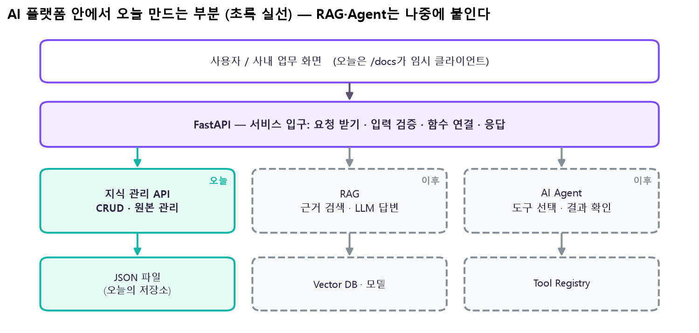
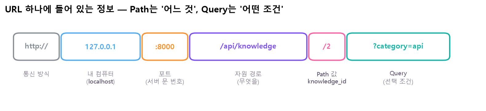
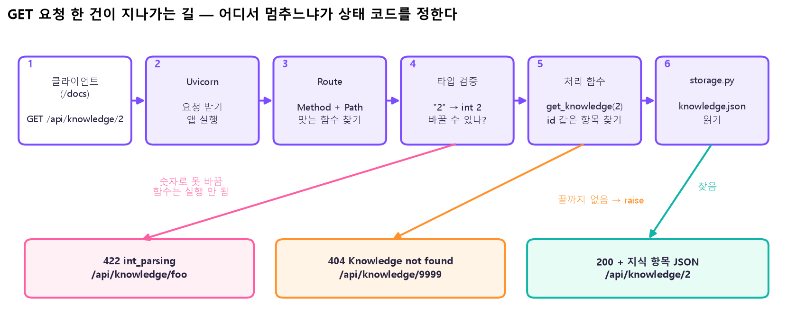
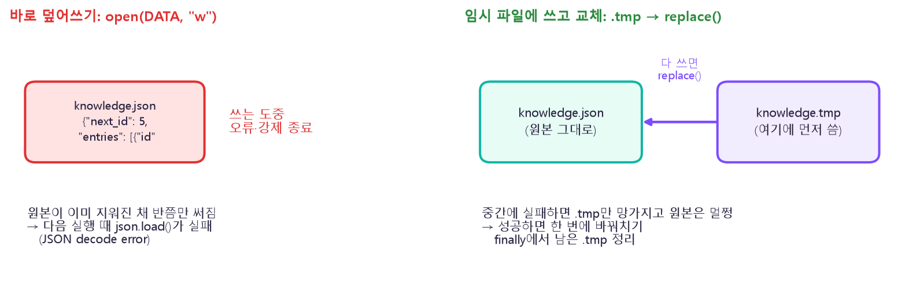
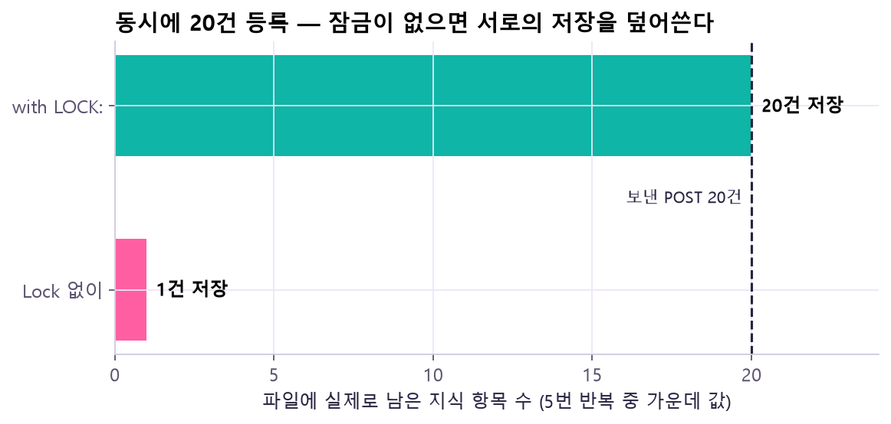
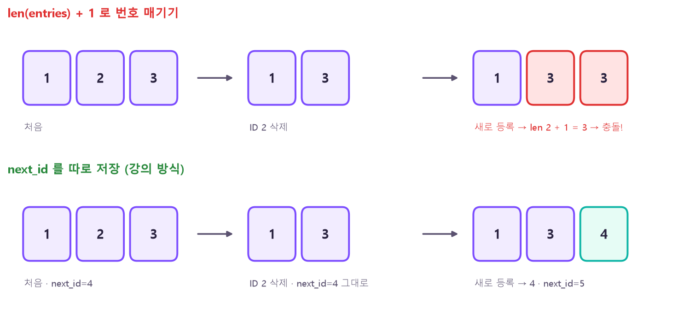
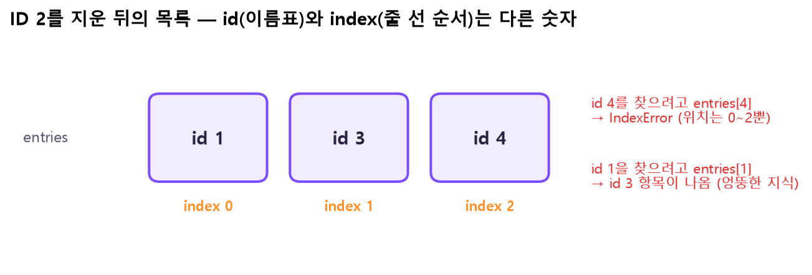
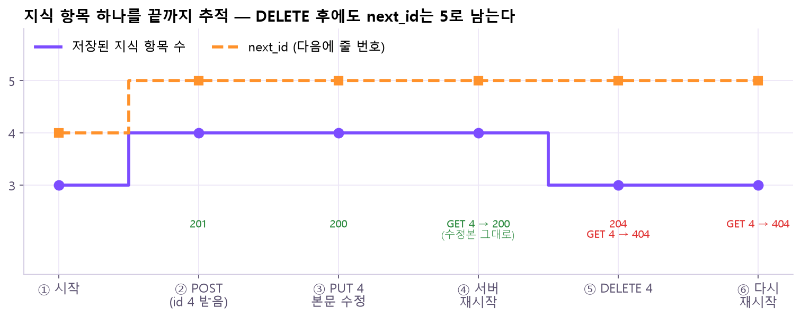
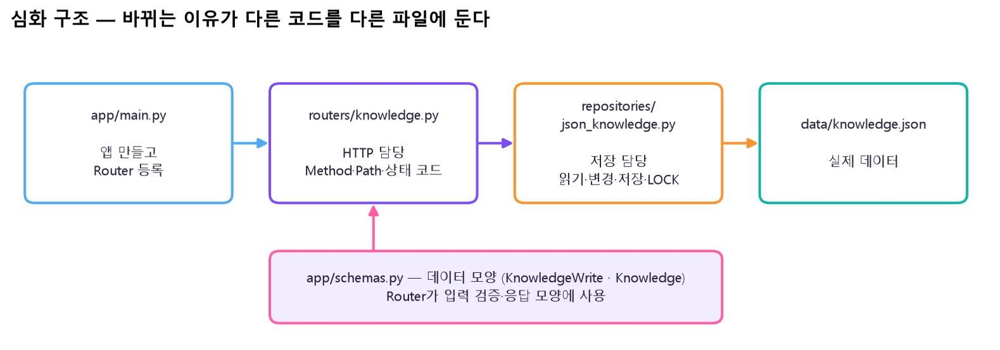

- FastAPI는 "이 주소로 이런 요청이 오면 이 함수를 실행해"를 연결해 주는 도구예요. RAG·Agent를 사람들이 쓰는 서비스로 만들 때 입구가 돼요.
- 오늘은 AI가 나중에 쓸 지식의 원본을 등록·조회·수정·삭제(CRUD)하고 JSON 파일에 저장하는 API를 만들어요.
- 응답 한 번으로 끝내지 않고 상태 코드(200·201·204·404·422)와 실제 파일, 재시작 후 값까지 확인해야 완성이에요.
본문에는 핵심 코드 한두 줄만 남겼어요.
📦 필요한 패키지
| 패키지 (pip 이름) | 뭐 하는 애? | 코드에서 |
|---|---|---|
fastapi | 주소(Route)와 함수를 연결하고, 입력 검증·자동 문서(/docs)를 만들어 줌 | from fastapi import FastAPI, HTTPException, Response |
uvicorn | 실제로 네트워크 요청을 받아 FastAPI 앱에 넘겨주는 서버 프로그램 | 직접 import 안 함 — python -m uvicorn main:app으로 실행 |
pydantic | 입력·응답 데이터의 모양 검사 (fastapi를 깔면 같이 설치됨) | from pydantic import BaseModel, Field |
json, pathlib, threading | 파일 읽기/쓰기, 파일 경로, 잠금 — 파이썬 기본 내장이라 설치 안 함 | import json, from pathlib import Path, from threading import Lock |
jinja2 (선택) | JSON 대신 HTML 화면을 만들 때 쓰는 템플릿 엔진 | from fastapi.templating import Jinja2Templates |
pytest, httpx (선택) | 자동 테스트. TestClient가 내부에서 httpx를 씀 | from fastapi.testclient import TestClient |
🔧 설치 · 확인 (PowerShell)
python --version # 3.10 이상인지
python -m venv .venv # 프로젝트 전용 가상환경 만들기
.\.venv\Scripts\Activate.ps1 # 가상환경 켜기
python -m pip install fastapi uvicorn
python -c "import sys; print(sys.executable)" # 지금 쓰는 python이 .venv 안의 것인지
python -m pip show fastapi pydantic uvicorn # 설치된 버전 확인.\.venv\Scripts\python.exe -m pip install fastapi uvicorn
.\.venv\Scripts\python.exe -m uvicorn main:app --reload
Invoke-RestMethod http://127.0.0.1:8000/health # PowerShell에서 GET 요청 확인pip 대신 python -m pip? — PC에 파이썬이 여러 개 있으면 pip가 엉뚱한 파이썬에 설치할 수 있어요. python -m pip은 "지금 이 python에 설치해"라는 뜻이라 설치한 곳과 실행하는 곳이 어긋나지 않아요. python -m uvicorn도 같은 이유예요.이거 어디에 써?
새로 온 직원이 "우리 팀 개발환경은 어디서 확인해요?"라고 물으면, 나중에는 AI Agent가 대답해 줄 거예요. 그런데 Agent가 답하려면 근거가 되는 안내문이 어딘가에 정리돼 있어야 해요. 오늘은 그 안내문(지식)의 원본을 넣고·찾고·고치고·지우는 API를 만들어요.

| 지식 관리 API (오늘) | RAG (다음 단계) | AI Agent (이후) | |
|---|---|---|---|
| 답하는 질문 | "안내문을 어떻게 유지하지?" | "관련 근거가 어디 있지?" | "이 작업엔 어떤 도구가 필요하지?" |
| 하는 일 | 등록·조회·수정·삭제, 저장 상태 확인 | 문서 검색 → 문맥 제공 → 답변·출처 | 도구 선택·호출 제안 → 실행 결과 점검 |
| AI 모델 필요? | ❌ 없어도 동작 | ✅ 임베딩·LLM | ✅ LLM |
① 첫 서버 띄우기
API(Application Programming Interface)는 프로그램끼리 주고받는 약속된 창구예요. 식당으로 치면 메뉴판 + 주문 창구 — "이 주소로 이런 형식으로 주문하면, 이런 형식으로 음식이 나온다"를 정해 둔 거예요.
main.py — 첫 JSON 응답 명령어 사전에서 자세히 →app = FastAPI(title="Knowledge API") # 앱 객체 만들기
@app.get("/health") # GET /health 요청이 오면python -m uvicorn main:app --reload
http://127.0.0.1:8000/health → {"status":"ok"}/docs — 자동 문서에서 요청 보내기 명령어 사전에서 자세히 →② HTTP 요청과 응답
HTTP는 브라우저·프로그램이 서버와 대화하는 규칙이에요. 대화는 항상 요청 1개 ↔ 응답 1개가 한 쌍이에요.

127.0.0.1:8000까지가 "어느 서버", /api/knowledge가 "무슨 자원", /2가 "그중 어느 것(Path 값)", ?category=api가 "어떤 조건으로(Query)"예요. 🤔 왜 둘을 나눠? Path는 대상을 콕 집을 때(2번 지식), Query는 목록을 걸러낼 때(분류가 api인 것만) 써요. 빠지면 안 되는 건 Path, 있어도 없어도 되는 건 Query가 자연스러워요.| 이름 | 예시 | 역할 |
|---|---|---|
| Method | GET · POST · PUT · DELETE | 무엇을 하려는지 (요청의 의도) |
| Path | /api/knowledge/4 | 어떤 자원의 어느 것인지 |
| Query | ?category=api | 목록을 거를 선택 조건 |
| Header | Content-Type: application/json | 본문 형식 같은 부가 정보 |
| Body | {"title": "실습 환경 안내", ...} | 새로 만들거나 고칠 데이터 (GET엔 보통 없음) |
| Status | 200 · 201 · 204 · 404 · 422 | 처리 결과를 숫자로 |
| Response body | 지식 JSON / 오류 detail / 없음 | 클라이언트가 받는 내용 |
# 요청 # 응답
GET /api/knowledge/2 Status: 200
Host: 127.0.0.1:8000 Content-Type: application/json
(Body 없음) {"id": 2, "title": "서버 실행",
"category": "api",
"content": "uvicorn으로 개발 서버를 켠다."}
GET /api/knowledge/2 한 건이 ①→⑥을 차례로 지나요. 같은 경로라도 어디서 멈추느냐에 따라 결과가 갈라져요 — foo는 ④ 타입 검증에서 정수로 못 바꿔 422(함수는 아예 실행 안 됨), 9999는 ⑤ 함수가 끝까지 못 찾아 404, 2는 ⑥에서 찾아 200. 🤔 왜 알아야 해? 상태 코드만 보고 "어느 단계에서 막혔는지"를 바로 알 수 있어서, 오류가 나면 고칠 곳을 좁힐 수 있어요.knowledge_id: int"라고 약속만 적으면, 문자열 "2"를 정수 2로 바꾸고 안 되면 422를 돌려주는 일까지 자동이에요.③ JSON 파일 저장소
오늘의 저장소는 데이터베이스가 아니라 JSON 파일 하나예요. 서버를 껐다 켜도 지식이 남아 있게 하려면 메모리(변수)가 아니라 파일에 써야 해요.
// data/knowledge.json
{
"next_id": 4,
"entries": [
{"id": 1, "title": "가상환경", "category": "setup", "content": "프로젝트별 패키지를 분리한다."},
{"id": 2, "title": "서버 실행", "category": "api", "content": "uvicorn으로 개발 서버를 켠다."},
{"id": 3, "title": "입력 오류", "category": "api", "content": "422이면 입력값을 확인한다."}
]
}| 키 | 뜻 |
|---|---|
entries | 지식 항목 목록. 항목 1건 = id + 제목 + 본문 + 분류 |
id | 서버가 발급하는 번호. 사용자가 정하지 않아요 |
next_id | 다음에 줄 번호. 파일 안에만 두고, API 응답에는 내보내지 않아요 |
'가상환경' ❌). 마지막 항목 뒤 쉼표도 안 돼요. 파일 문법이 깨지면 서버가 읽다가 실패해요.storage.py — 읽기·쓰기 보조 함수 명령어 사전에서 자세히 →json.dump(data, f, ensure_ascii=False, indent=2)
temp.replace(DATA) # 다 쓴 임시 파일로 바꿔치기
knowledge.json을 바로 "w"로 열어 쓰다가 도중에 멈춘 경우예요. "w"로 여는 순간 원본 내용이 지워지니, 반쯤 쓰인 깨진 JSON만 남아요. 오른쪽은 .tmp에 먼저 끝까지 쓰고, 성공했을 때만 replace()로 바꿔치기해요. 🤔 왜? 쓰다 실패해도 망가지는 건 임시 파일뿐이라 원본이 살아남아요. 그래서 "저장 실패 = 예전 데이터 그대로"가 보장돼요.with LOCK: — 읽기부터 저장까지 한 번에 잠그기 명령어 사전에서 자세히 →with LOCK: # 이 블록은 한 번에 한 요청만
data = read_data() # 1. 읽고
with LOCK:으로 읽기~저장을 묶으면 앞 요청이 끝날 때까지 다음 요청이 기다리니 20건이 다 남아요.④ 조회 (GET) — 목록·상세·조건
@app.get("/api/knowledge")
return data["entries"] # list를 돌려주면 JSON 배열@app.get("/api/knowledge/{knowledge_id}")
raise HTTPException(404, "Knowledge not found") # 끝까지 없으면 404@app.get("/api/knowledge")
def list_knowledge(category: str | None = None): # 기본값이 있으면 → Query, 생략 가능⑤ 등록 (POST) · 입력 검증
새 지식은 URL이 아니라 Body에 담아 보내요. ID는 보내지 않아요 — 서버가 정해요.
POST /api/knowledge
Content-Type: application/json
{
"title": "실습 환경 안내",
"content": "Python 3.10 이상을 사용한다.",
"category": "setup"
}class KnowledgeWrite(BaseModel): # POST·PUT 입력
title: str = Field(min_length=1, max_length=80)@app.post("/api/knowledge", status_code=201, response_model=Knowledge)
def create_knowledge(payload: KnowledgeWrite): # Body를 KnowledgeWrite로 검사
next_id를 파일에 따로 적어 두는 강의 방식 — 삭제해도 4는 그대로라 새 항목은 4를 받아요. 🤔 왜? ID는 "이 지식의 이름표"라 한 번 쓴 번호는 다시 쓰면 안 돼요. 지워진 2번을 기억하던 다른 프로그램이 새 항목을 옛 지식으로 착각할 수 있어요. 그래서 next_id는 줄이지 않고, entries와 같은 파일에 저장해 재시작해도 이어져요.⑥ 수정 (PUT)
PUT /api/knowledge/4
Content-Type: application/json
{"title": "실습 환경 안내", "content": "프로젝트별 가상환경을 사용한다.", "category": "setup"}이 수업의 PUT 규칙: 세 필드를 모두 보내 내용을 통째로 교체해요. ID·항목 수·next_id는 그대로예요.
@app.put("/api/knowledge/{knowledge_id}", response_model=Knowledge)
def update_knowledge(knowledge_id: int, payload: KnowledgeWrite): # Path + Body 둘 다
entries[4]로 id 4를 찾으면 위치는 0~2뿐이라 오류, entries[1]로 id 1을 찾으면 엉뚱하게 id 3이 나와요. 🤔 왜? 처음엔 우연히 id 1이 index 0, id 2가 index 1…처럼 하나씩 밀려 맞아 보이지만, 삭제가 한 번 일어나면 바로 어긋나요. 그래서 data["entries"][knowledge_id]로 찾지 않고, 하나씩 돌며 entry["id"] == knowledge_id로 비교해요.⑦ 삭제 (DELETE) · 상태 코드
지우는 건 knowledge.json 파일 전체가 아니라, 그 안에서 ID가 일치하는 항목 하나예요. 나머지 항목과 next_id는 그대로예요.
@app.delete("/api/knowledge/{knowledge_id}", status_code=204)
return Response(status_code=204) # 본문 없는 성공지금까지 쓴 상태 코드
| 코드 | 우리 API의 상황 | 다음에 확인할 것 |
|---|---|---|
200 OK | 목록·상세 조회 / 정상 수정 | 응답 데이터 = 저장된 값? |
201 Created | 새 항목 생성 | 새 ID가 실제 파일에도? |
204 No Content | 삭제 성공 | 본문 없음 + 재조회 404 |
404 Not Found | 없는 경로 / 없는 지식 | Path 오타인지 ID가 없는 건지 |
405 Method Not Allowed | 경로는 있는데 그 Method는 없음 | GET·POST·PUT·DELETE 중 맞는지 |
422 Unprocessable | 자료형·필수값·길이 규칙 위반 | detail의 loc·msg |
500 Server Error | 서버 코드·파일 접근 오류 | 서버 터미널 로그와 저장 파일 |
raise 하고, 쓰기 실패 땐 성공 응답을 만들지 않아요. 확인할 때는 실패 요청 전후로 항목 수와 next_id가 같은지 봐요.🧪 직접 요청 보내 보기
브라우저 안에서 오늘 만든 API를 흉내 냈어요(실제 서버는 아니고, 강의 코드와 같은 규칙으로 움직여요). Method와 ID, Body를 바꿔 보내기를 누르면 상태 코드·응답·파일 내용이 바뀌어요. 아래 칸은 knowledge.json이에요.
(아직 보낸 요청 없음)foo 넣고 GET → 422 ② POST 두 번 → id 4, 5 ③ id 2 DELETE 후 len+1 방식을 켜고 POST → 번호 충돌 ④ PUT으로 없는 id 9999 → 404이고 파일은 그대로 ⑤ 서버 재시작 후에도 파일이 남는지.⑧ 끝까지 추적 · 재시작 확인
지식 하나를 만들고 → 고치고 → 서버를 껐다 켜고 → 지우고 → 다시 껐다 켜며, 각 단계에서 파일 상태가 예상대로인지 봐요.

next_id예요. POST에서 둘 다 1씩 오르고, PUT과 재시작에서는 그대로, DELETE에서는 항목 수만 줄고 next_id는 5로 남아요. 아래 글씨는 각 단계의 응답이에요. 🤔 왜 재시작까지 봐? 응답은 "방금 메모리에서 만든 값"일 뿐이에요. 서버를 껐다 켜도 같은 값이 나와야 파일에 진짜 저장된 거예요. 응답만 바뀌고 파일이 그대로면 미완성이에요.| 순서 | 요청·조작 | 예상 데이터 상태 |
|---|---|---|
| 1 | 처음 파일 확인 | 항목 3개 · next_id 4 |
| 2 | "실습 환경 안내" POST → 받은 ID 기록 | 항목 4개 · id 4 · next_id 5 |
| 3 | 같은 ID 본문 PUT | 개수·ID 그대로, 본문만 변경 |
| 4 | 서버 종료(Ctrl+C) → 같은 폴더·같은 명령으로 재실행 | 수정한 본문이 그대로 조회됨 |
| 5 | 같은 ID DELETE → 재조회 | 상세 404 · 목록에서 사라짐 |
| 6 | 다시 재실행 → 재조회 | 삭제 상태 유지 · next_id 5 |
⑨ 역할별로 파일 나누기
기능이 늘면 main.py 하나가 너무 길어져요. 바뀌는 이유가 다른 코드를 다른 파일로 나눠요.
fastapi_knowledge/
├─ app/
│ ├─ __init__.py
│ ├─ main.py ← 앱 만들고 Router 등록만
│ ├─ schemas.py ← 입력·응답 모양 (KnowledgeWrite, Knowledge)
│ ├─ routers/
│ │ ├─ __init__.py
│ │ └─ knowledge.py ← HTTP: Method·Path·상태 코드
│ └─ repositories/
│ ├─ __init__.py
│ └─ json_knowledge.py ← 저장: 읽기·변경·저장·LOCK
├─ data/
│ ├─ knowledge.json ← 실제 데이터
│ └─ knowledge.seed.json ← 처음 데이터 (초기화용)
├─ README.md
└─ requirements.txt
app/main.py — 조립 명령어 사전에서 자세히 →app.include_router(router) # Router에 모아 둔 경로들을 앱에 연결
python -m uvicorn app.main:app --reloadAPIRouter — 관련 경로 묶기 명령어 사전에서 자세히 →router = APIRouter(prefix="/api/knowledge", tags=["knowledge"])
@router.post("", status_code=201, response_model=Knowledge)BASE = Path(__file__).resolve().parents[2] # 프로젝트 루트 (repositories → app → 루트)
def create(fields: dict) -> dict:templates = Jinja2Templates(directory=BASE / "templates")
@app.get("/web/knowledge", response_class=HTMLResponse)monkeypatch.setattr(repo, "DATA", test_file) # 저장 경로만 임시 파일로 바꿔치기
with TestClient(app) as client:⑩ 다음 단계와 연결
왜 파일로 되는데 DB를 배워?
| 오늘의 JSON 파일 | PostgreSQL에서 풀 질문 |
|---|---|
| 정상 저장 후 재시작해도 남아요 | 동시에 여러 요청이 바꾸면? |
| 작은 파일 전체를 읽고 전체를 다시 저장해요 | 데이터가 10만 건이면? 필요한 줄만 읽을 수 없나? |
| Lock은 서버 프로세스 하나 안에서만 | 서버가 여러 대면? |
| 표 하나(entries) | 작성자·분류 같은 여러 표의 관계를 어떻게 지키지? |
| — | 여러 변경을 "모두 성공 아니면 모두 취소"로 하려면? → 트랜잭션 |
| 날짜 | 핵심 질문 | 결과 |
|---|---|---|
| 11/10 (오늘) | HTTP로 지식을 어떻게 CRUD 하나? | JSON 파일 기반 FastAPI CRUD |
| 11/11 | 표·관계·SQL로 데이터를 어떻게 다루나? | SQL CRUD · JOIN · ERD · 트랜잭션 |
| 11/12 | 오늘 API를 PostgreSQL에 어떻게 연결하나? | ORM · 연동 CRUD · 설정 · 통합 테스트 |
| 11/13 ~ 11/20 | LLM · Prompt · LLM API · Embedding · Vector DB · Chunking | Retriever–Prompt–Generator, 즉 RAG를 API로 제공 |
Agent와 API가 만나는 두 방향
| 방향 | 흐름 | 뜻 |
|---|---|---|
| 사용자가 Agent를 부름 | 사용자 → FastAPI → Agent 처리 | API가 Agent의 서비스 입구. 작업 요청을 검증하고 결과·상태를 전달 |
| Agent가 API를 씀 | Agent → 도구 함수 → 지식 API | "지식 조회"를 도구로 연결. 도구의 설명·입력·실행 코드는 따로 만들어요 |
| 단계 | 누가 | 예 |
|---|---|---|
| 판단 | Agent(LLM) | "지식 조회가 필요하다" |
| 도구 호출 제안 | Agent(LLM) | get_knowledge(2) |
| 검증·실행 | 애플리케이션 | 권한 확인 → GET /api/knowledge/2 |
| 결과 반환 | 애플리케이션 | 원문 + 상태 기록 |
🩺 문제가 생기면 — 가장 가까운 원인부터
| 증상 | 먼저 볼 것 | 구분할 점 |
|---|---|---|
| 서버 접속이 안 됨 | 터미널(서버가 떠 있나) · 포트 · 실행 명령 | HTTP 오류 응답과는 다름 — 응답 자체가 없음 |
404 / 405 | /docs의 Path · Method · ID | 없는 자원(404) vs 그 Method가 없음(405) |
422 | detail의 loc · msg | Path · Query · Body 중 어디인가 |
| 파일 없음 / JSON 오류 | 파일 경로 · 괄호 · 큰따옴표 · 끝 쉼표 | 빈 데이터로 덮어쓰지 않기 |
| 재실행하면 값이 달라짐 | 자동 초기화 코드 · 다른 폴더의 파일 | 서버 재시작과 seed 복사는 다른 일 |
| 코드를 고쳤는데 그대로 | 서버가 두 개 떠 있지 않은지 · --reload | 같은 Route 중복 등록 |
원본 자료
- 강의:
20261110.pdf(FastAPI 입문 · 지식 관리 API, 94쪽) — 플랫폼 속 위치 p2–11 · 첫 서버 p12–20 · JSON 조회 p22–28 · POST·검증 p30–36 · PUT p38–41 · DELETE·상태 코드 p43–47 · 역할별 구조·Template p49–55 · 플랫폼 연결 p57–65 · 부록(저장·Lock·용어·PATCH·검색·Template·테스트·Windows 실행) p79–91 - 노트의 실제 응답·Lock 실험 값: 강의 코드를 FastAPI 0.162.2 · Pydantic 2.14.3에서 직접 실행해 확인 (그림 스크립트
tools/visuals/make_day17.py) - 공식 문서: FastAPI First Steps · Path Parameters · Query Parameters · Request Body
- 공식 문서: Response Status Code · Handling Errors · Body - Updates (PUT/PATCH) · Response Model
- 공식 문서: Bigger Applications (APIRouter) · Templates · Testing · Uvicorn Settings
- 공식 문서: Pydantic Fields · Python json · pathlib · threading.Lock · os.replace · RFC 9110 HTTP Semantics